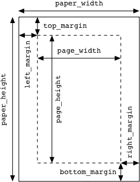
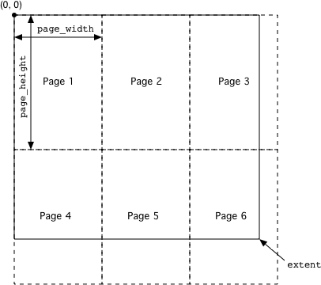

Printing
Most
of the time you won't have to do anything to get basic printing support
in your PyGUI application. There are default implementations of the Page Setup command in the Application class, and the Print
command in the View and ScrollableView classes. The generic printing
system uses the same code for printing a view as is used for drawing to
the screen, so once you've written a draw() method for your view, you can also print it.
While
the default printing system works well enough, it is fairly rudimentary
and won't always do exactly what you want. However, you can
customise and build upon it in various ways to provide more advanced
features. This section explains how the printing support in PyGUI works
and how you can extend it.
Page Setup
Page setup information is represented by an instance of the PageSetup
class. This class holds all of the information typically specified by a
"Page Setup" dialog. For PyGUI's purposes, the most important of these
are the paper size (the physical size of the sheet of paper) and the margins (the distances from the edge of the paper to the region that will be printed on). Together these determine the page size (the size of the printed area). The following diagram illustrates the relationships between these attributes.

The Application object has a page_setup attribute that holds a default PageSetup instance, and an implementation of the Page Setup command that presents a dialog for editing it. The Document class also has a page_setup attribute and a corresponding Page Setup
command handler. Thus, in a document-oriented application, each
document has its own set of page setup information. If a view is
associated with a document, it will use that document's PageSetup when
printed; otherwise, it will use the application-wide one.
None
of these PageSetup objects are automatically saved anywhere. If you
want them to persist, you will need to save them along with your
document data, or if you're not using documents, write the
application-wide one to a preferences file. To facilitate this,
PageSetup objects are designed to be pickled. They also have to_string() and from_string() methods, in case you don't want to use pickle.
You can customise the way page setup information is edited by overriding the page_setup_cmd() method of a view, a document or the application. You may want to make use of the utility function present_page_setup_dialog(), which displays the platform's standard page setup dialog for a given PageSetup instance.
Printing Views
The Print command is handled by the print_cmd() method of the View and ScrollableView classes. First, the view attempts to find a PageSetup instance. If the view's model attribute refers to a Document, and the document's page_setup
attribute is not None, then it is used. Otherwise, the application-wide
PageSetup is used. If you want the PageSetup to be located some other
way, you can override the get_page_setup() method of the view.
Next, the view's print_view()
method is called, with the PageSetup object as a parameter. This method
does most of the hard work. First it determines the total size of the
area to be printed. For a View, this is the same as the size of the
view on the screen; for a ScrollableView, it is the view's extent.
Then the printed area is divided into pages. with the size of each page equal to the page_size attribute of the PageSetup. The view's draw()
method is called once for each page, with a special canvas object that
draws to the printer instead of the screen. In place of the update_rect
parameter, a rectangle is passed representing the bounds of the page
currently being drawn.
The following diagram illustrates a view
with a large extent being divided into pages for printing. Note that
the origin of the coordinate system as seen by the draw() method is
always at the top left corner of the extent, regardless of which page
is being printed. So the view doesn't need to know whether it's drawing
to a screen or a printer (although it can find out if it wants to, as
we will see below).

Customising Printing
Often
you won't want to print a view exactly the same way as it appears on
the screen. For example, things like selection highlighting and page
boundaries should only be shown on the screen and not on the printed
page. The Canvas object passed to the draw() method has a printing
attribute that is true when printing and false when drawing to the
screen. You can use this to determine which elements of the view should
be drawn.
This technique is sufficient to accommodate minor
differences between screen drawing and printing. Sometimes, however,
you may want to lay out the document quite differently when printing.
An example would be a word processor where you want to display the text
in a continuous "galley" view on the screen, without any page breaks.
When printed, however, you want to add headers and footers to each
page. This presents a problem, because the extent of the view has to be
increased when printing in order to accommodate the headers and footers.
The
solution to this kind of problem is to use a different view subclass
for printing. When you come to print, instead of printing the view that
you use on the screen, create an off-screen instance of the printing
view and call its print_view()
method. The printing view can then calculate its extent appropriately
and generally do things in as different a way as needed from the
on-screen one.
An example of the use of this technique can be
seen in PyGUI's TextEditor class. When printed, it wraps to the width
of the page instead of the width of the view on the screen. It also
figures out how many lines will fit on a page and avoids splitting a
line between two pages. To accomplish this, it uses a separate View
subclass behind the scenes (TextEditorPrintingView). It's implemented
in pure Python, so you can examine it if you want to see how it works.
There
are a couple of ways you can intervene in order to introduce your
custom printing view into the printing process. One way is to override
the print_view() method of the on-screen view to instantiate a printing view and then call its print_view() method instead. (This is the technique used by TextEditor.)
The
other way, applicable in a document-oriented application, is to handle
printing at the document level instead of the view level. This may make
more sense if you have a number of different kinds of on-screen view of
the document, but only one way of printing it. Whichever view is active
when the user gives the Print command, you want the same printing code to be invoked.
To do it this way, you will first need to disable handling of the Print command in the view, otherwise it will never get as far as the document. You can do this by setting the printable property of the view to false. The view will then ignore the Print command and pass it on to the next handler.
Then you can give your Document subclass a print_cmd() method that creates an instance of your printing view and calls its print_view() method, passing it the document's page_setup. Remember to enable the Print command in the document's setup_menus() method.
---